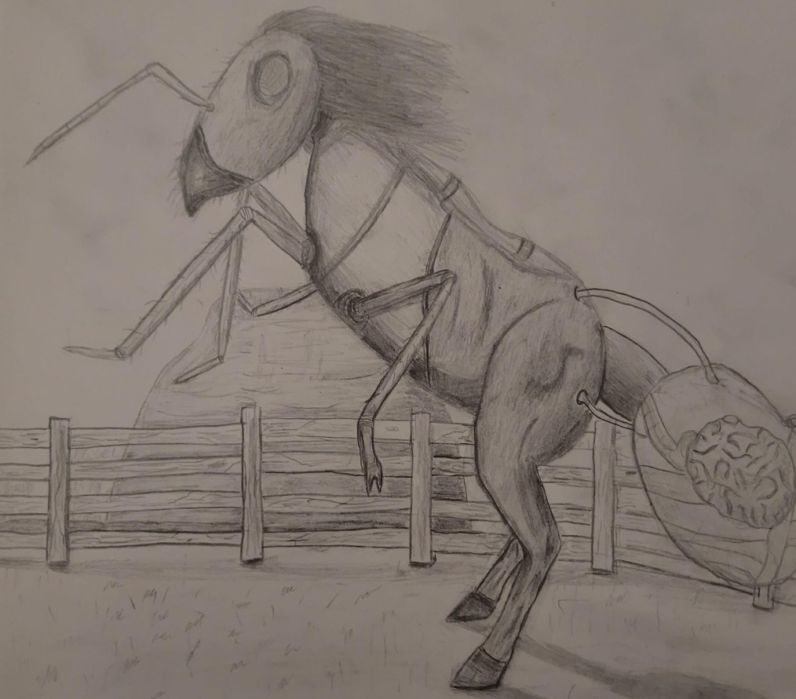
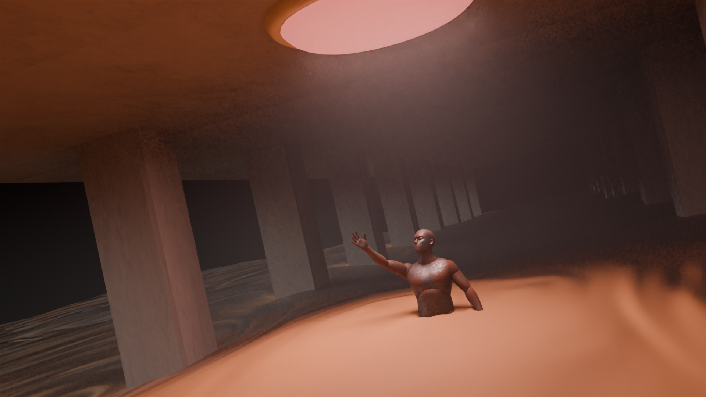

Visual Art
Tradtional Art
I don't have much experience with traditional art forms. I started to learn to draw in 2023 and it was mostly as a recommended skill for learning 3D animation. The drawing on the right came out of my introductory class to drawing. We had a halloween themed assignment where we drew cards with different words and made a drawing that incorporates all of them. I drew 'Insect', 'Horse', and 'Brain' which led to the ant stallion.

3D Art
3D animation, modeling, lighting, etc. was much more interesting to me. I started by learning from YouTube tutorials then I graduated to taking university classes in 3D art, which was mostly watching YouTube tutorials.
